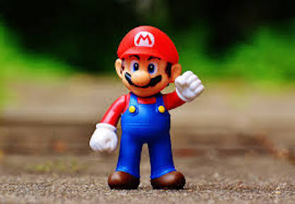

Welcome to the image Gallery
Here is a screen shot that i will be modifying with the image attributes.

Using the position attribute for the Image, I will be playing with the width and the height, along with adusting the max and min's. This just adjusts the width and the height of the image.
In this picture I will be playing with the border, and border-radius propertise. Which just adds a border aroudnthe image, border-radius ads curves aroundthe corners.
Here I will be playing with alig, object fit, and object position. Align sets the alignemmet of the image, object-fit resizes or reshapes teh image to fit in its container, object-center sepcifies where exactlythe image will be, in terms of position.
Here I will be using the box-shadow property. This adds a shadow effect around the image, it create a good sense of visual design.
here I will be suing the filter property, which will adjust the actual image, it helps manipulate the rendering of the image so you see different things.